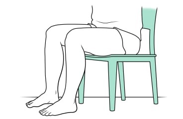
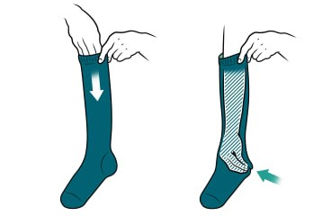
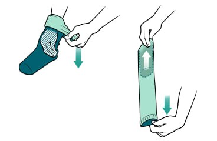
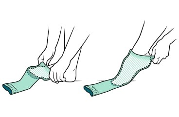
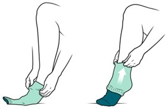
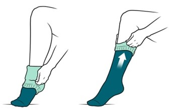
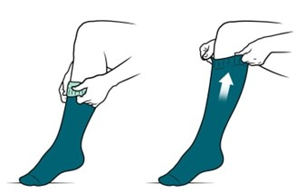
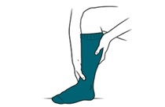

1. Sit on a firm surface where your feet can touch the ground.

2. Hold the top of the stocking with one hand. Then with your other hand, reach in and grab the heel.

3. When you have a firm grip on the heel, pull your hand back up through the stocking, turning it inside out as far as the heel.

4. Put your toes in as far as they will go. Then centre your heel in the stocking and pull it up slightly, just around your heel.

5. Use both hands to grasp the folded part of the stocking about 5 centimetres (2 inches) below the fold. Pull that section up over your ankle.

6. From above your ankle, grasp the folded part of the stocking about 5 centimetres (2 inches) below the fold. Pull that section up.

7. Continue pulling the stocking up in short sections until it is in its final position. The final position may be below your knee. Or it might be above your knee.

8. Run your hands over the stocking to smooth it out.
